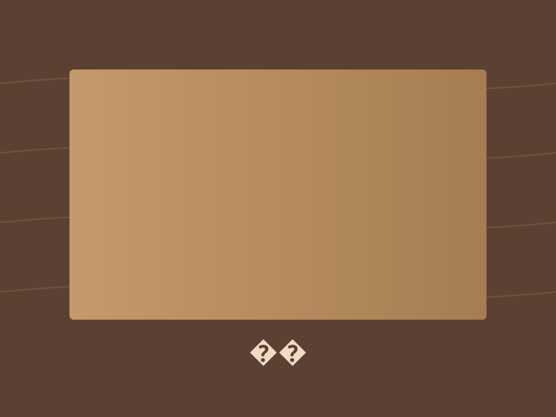
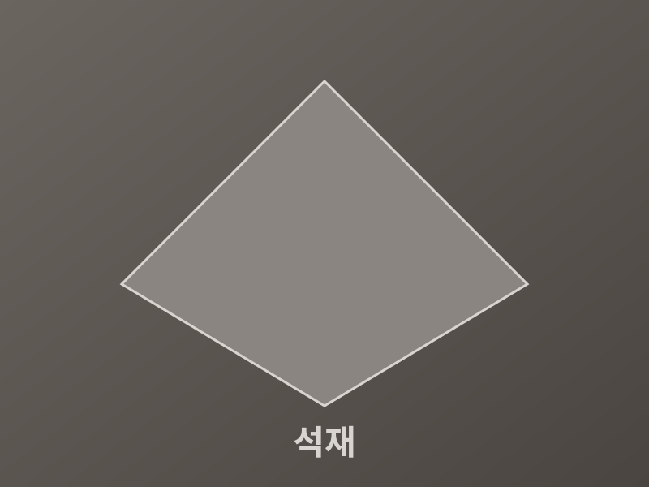

서비스 소개
건축자재 포털은 설계·시공 현장에서 필요한 자재 정보를 한곳에서 제공합니다.
건축자재 선택, 더 쉽게
건축 프로젝트마다 요구되는 자재는 다양합니다. 구조용 콘크리트와 철근, 외벽 단열재, 마감용 타일과 석재까지 — 각 자재의 특성과 적용 분야를 이해하는 것은 품질과 비용 모두에 영향을 미칩니다.
건축자재 포털은 주요 건축자재를 카테고리별로 정리하고, 용도·특성·태그 기반 검색을 통해 빠르게 정보를 찾을 수 있도록 돕습니다.



다루는 자재 분야
이용 방법
-
1
카탈로그 탐색
자재 카탈로그에서 카테고리 필터 또는 검색으로 원하는 자재를 찾습니다.
-
2
상세 정보 확인
카드를 클릭하면 용도, 특성, 관련 태그 등 상세 정보를 확인할 수 있습니다.
-
3
문의 및 상담
프로젝트에 맞는 자재 선정이 필요하면 문의 페이지를 통해 상담을 요청하세요.